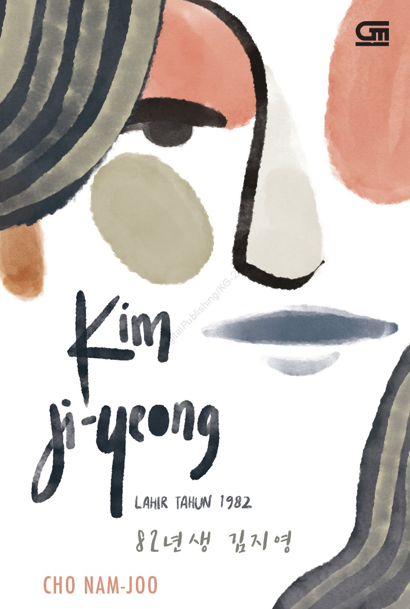
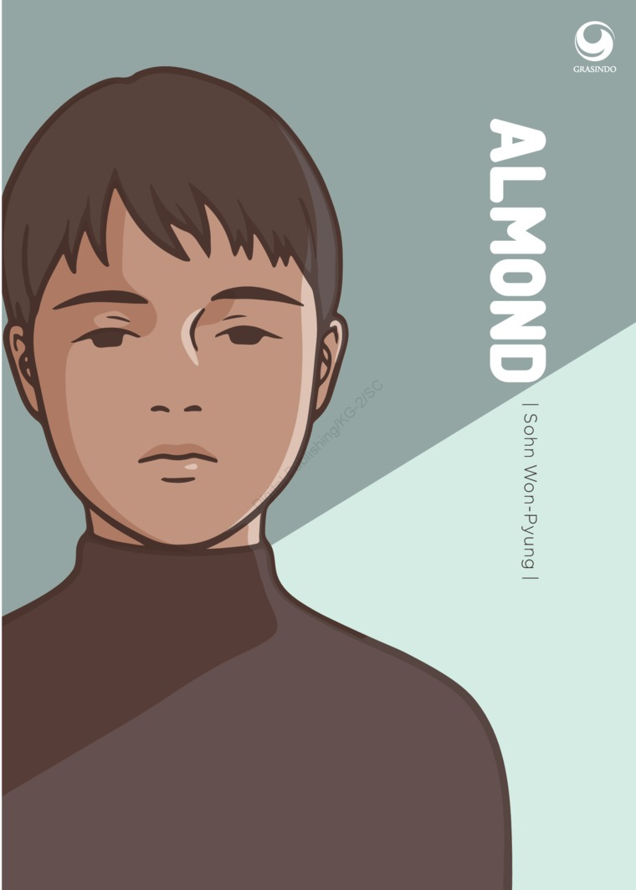

| Home | Best Seller |
|  | Judul : Kim Ji-Yeong, Lahir 1982 Penulis : Cho Nam-Joo Tanggal Terbit : 10 November 2019 Jumlah Halaman : 192 halaman Penerbit : Gramedia Pustaka Utama Harga : Rp58.000 |
|  | Judul : Almond Penulis : Sohn Won - Pyung Tahun : Maret 2019 Jumlah Halaman : 232 halaman Penerbit : Penerbit PT Grasindo Harga : Rp88.000 |
 |
Judul : Gadis Minimarket (Convenience Store Woman) Penulis : Murata Sayaka Tahun Terbit : Juli 2020 Jumlah Halaman : 160 halaman Penerbit : Gramedia Pustaka Utama Harga : Rp58.000 |
 |
Judul Buku : Cantik Itu Luka Penulis : Eka Kurniawan Tanggal Terbit : 17 Januari 2018 Jumlah Halaman : 520 halaman Penerbit : Gramedia Pustaka Utama Harga : Rp125.000 |
 |
Judul : Laut Bercerita Penulis : Leila S. Chudori Tahun Terbit : Oktober 2017 Jumlah Halaman: 394 halaman Penerbit : Kepustakaan Populer Gramedia Harga : Rp100.000 |
| <= Science Fiction |